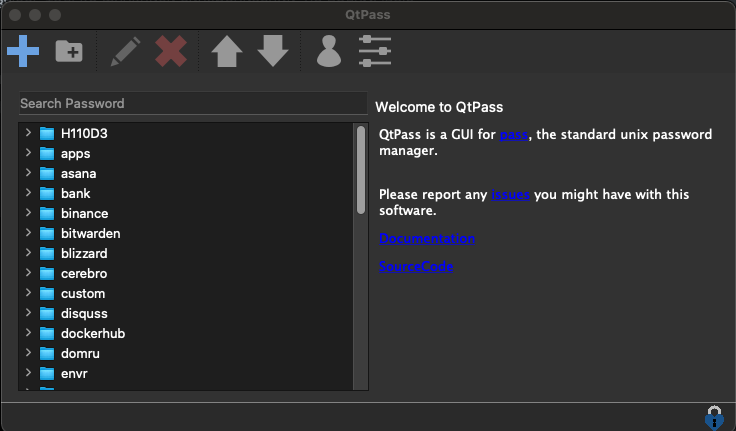
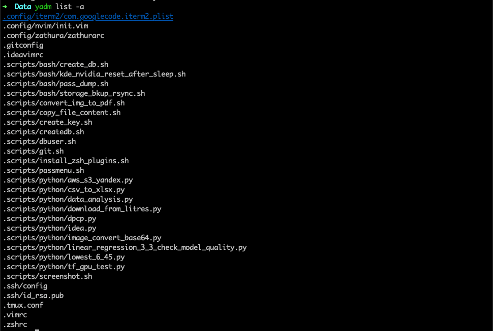
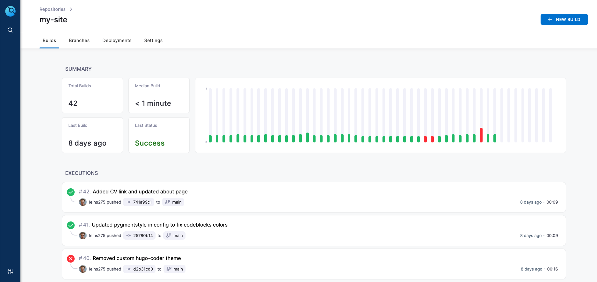

О чем пойдет речь в этой статье
В современном мире, в очень насыщенной информационной среде компьютеры, смартфоны и другие гаджеты и электронные устройства играют очень важную роль. У каждого, и у меня в том числе, за долгие годы взаимодействия с компьютером накопилось много разной информации. И не всегда понятно, как это все богатство хранить, чтобы и найти было просто, и доступ был с любого нужного устройства, и чтобы самые важные данные как-то безопасно шифровались для пущей безопасности. Для этого нужна целая экосистема, и сейчас что-то похожее на готовую и целостную экосистему может предложить только apple. Но вообще говоря, если вам не получается ваш мир замкнуть только на устройствах кампании apple, по разным причинам, то нужно какое-то другое решение. Желательно кроссплатформенное, и чтобы еще можно было все данные хранить на своем сервере.
В рамках данной статьи я постараюсь изложить свои мысли по поводу всего этого. Выделю, на какие части я делю имеющуюся информацию, как ее организую, какими инструментами и сервисами пользуюсь сам и какие достойны рассмотрения. Также рассмотрим несколько кейсов, касающихся работе с девайсами и смене девайсов. Одна из целей создания подобной инфраструктуры - сделать замену одного устройства на другое максимально безболезненным.
Какая бывает информация и как ее хранить
Файлы
Более менее важные файлы тоже хочется синхронизировать между устройствами. Для этого лучше всего подходят облака. Можно пользоваться популярными облачными провайдерами, такими как гугл, яндекс и другие. Если же вы беспокоитесь о надежности своих данных, то имеет смысл рассмотреть решения, которые позволяют разворачивать облако на своем сервере. Я пользуюсь nextcloud.
Nextcloud дает много преимуществ, таких как:
- Безопасность данных. Вы храните ваши данные на своем личном сервере, и меньше шансов что кто-то получит к ним доступ.
- На своем сервере вы можете получить больше места за меньшие деньги. У меня это raid1 на 1 терабайт.
- Расширения. Некстклауд имеет ряд очень полезных расширений, которыми вы можете покрыть практически все свои потребности, далее я постараюсь рассказать о самых интересных.
Как и многое из того, о чем вы прочтете далее, я подсмотрел у автора этого блога. Вы можете посмотреть его видео о nextcloud, там он рассказывает много интересного.
Пароли
Пароли. Никаких “Один пароль для всего”, “пароли в блокнотике”, “Переставлю циферки в дне рождения бабушки”. Сейчас у каждого минимум несколько десятков паролей от различных сервисов, все должны быть длинными, случайными и уникальными. Поэтому обходиться без менеджера паролей очень больно. Менеджер паролей должен позволять автоматически генерировать пароли (а также вводить вручную), синхронизировать их между всеми устройствами, а также обеспечивать их безопасность за счет шифрования.
Я расскажу про 3 хороших решения, хотя их конечно же гораздо больше.
Bitwarden
Очень хороший вариант - Bitwarden. Это классное решение с открытым исходным кодом, и его довольно легко настроить. Также есть возможность развернуть сервер битвардена на своем сервере, для повышения безопасности. Если вы вдохновились этим постом и хотите с нуля начать пользоваться менеджером паролей, и если вы не какой-нибудь продвинутый линуксоид, я вам настоятельно рекоммендую использовать имеено данный вариант, как самый простой и удобный, и при этом с открытым исходным кодом, что для менеджера паролей обязательно.
Pass
Лично я пользуюсь pass. Это стандартный менеджер паролей для unix систем. Он использует gpg для шифрования, pwgen для генерации паролей, а также git для синхронизации. Я использую его уже больше года, полет нормальный. Не готов утверждать, что этот вариант более безопасный или удобный, просто я к нему привык и меня все устраивает. В целом с pass тоже довольно просто разобраться, но нужно будет больше времени потратить на то чтобы вникнуть в детали и разобраться с gpg ключами.
Вообще pass - консольное приложение, но на практике удобней использовать его вместе с каким-то gui фронтоном. Я пользуюсь qtpass, и забиндил его на определенный хоткей. У него есть удобный поиск и все что мне нужно.

Nextcloud
У некстклауда есть расширение, которое позволяет вам хранить пароли. Это в целом тоже довольно удобный вариант, если вы развернули некстклауд - можете просто пользоваться расширением. Оно поддерживает шифрование паролей и также имеет мобильную версию.
Конфиги
Очень больно бывает, когда потратил много времени на настройку рабочего окружения, а потом сменил компьютер. Хочется нажать кнопочку, и чтобы все настройки переехали на новое устройство. Поэтому лично я ужасно не люблю программы, которые нельзя настроить текстовым конфигурационным файлом. К сожалению, без подобных программ не обойтись, но возможность синхронизировать конфигурацию хотя бы части приложений - это уже большое дело.
И, как ни странно, для такого существуют специальные менеджеры конфигов! Расскажу только про тот, которым пользуюсь сам.
Мне нравится yadm - простой и удобный менеджер конфигов, который позволяет немного упростить синхронизацию через гит, а также добавляет некоторые полезные функции. Например, вы можете хранить разные версии конфигов для разных операционных систем, шифровать файлы и даже немного автоматизировать процесс настройки вашего окружения с нуля. Я пока что пользуюсь только функцией синхронизации, но подумываю написать скрипт автоматизации для переноса всех моих данных.
Тут наверное нужно сказать, что вы конечно можете синхронизировать конфиги и без всяких менеджеров, просто скопировав их в то же облако. Просто специальный менеджер позволяет вывести удобство работы с конфигами на совершенно новый уровень.
Вот так выглядит набор файлов, которые я синхронизирую через yadm:

Заметки
Вопрос о хранении заметок содержит в себе широкое поле для обсуждений. Я не буду вдаваться в подробности различных методологий ведения заметок, просто расскажу о приложениях которыми пользуюсь я.
Я делю заметки на 2 типа:
- Заметки, содержащие полезные идеи или другую информацию, которую хочется сохранить, запомнить, и периодически к ней обращаться.
- Бытовые и временные заметки - “записал и не забыл”. У меня это чаще всего это списки покупок в магазин. + Иногда такие заметки хочется пошарить.
Во-первых, приложения, хранящие заметки на своем сервере в проприетарном формате - это не круто. Я не люблю когда меня как-то привязывают к определенному инструменту, причем по совершенно пустяковой причине.
Simplenote
simplenote - очень крутое приложение для заметок. Поддерживает маркдаун, кроссплатформенное, а также позволяет поделиться заметками с другими пользователями.
Obsidian
Очень мощное приложение, вдохновленное методологией ведения заметок zettelcasten. Это приложение также базируется на markdown разметке, но в отличие от simplenote позволяет хранить заметки как простые текстовые файлы в своей локальной файловой системе. Также у него есть много классных фич, к примеру можно посмотреть граф своей базы заметок, выглядит очень футуристично. Вот для примера граф моей базы заметок на данный момент, пока что он не очень большой и целиком помещается на скриншоте.
Если вы заинтересовались темой, вот еще пара видео: 1 и 2
Nextcloud
И тут снова он. Также есть специальное расширение для заметок. Поддерживает маркдаун.
База знаний
Очень кратко: база знаний - набор заметок и каких-то рецептов, которые позволяют вам не тратить время на то, чтобы 100 раз гуглить решения одних и тех же проблем. Думаю что для личного использования оптимально подойдет Obsidian, но для нескольких пользователей лучше использовать, например, wikijs.
Задачи
Очень важно, если слово “продуктивность” для вас не пустой звук, использовать отдельное место для записи дел, которые вы хотите сделать. В целом вы можете записывать свои дела и на бумаге, но сейчас гораздо удобнее и проще это делать в электронном формате. Я пользуюсь Todoist, его бесплатная версия позволяет синхронизировать задачи между устройствами и делать все базовые вещи.
Мероприятия
Также отдельно стоит выделять из списка дел мероприятия. Это дела, которые имеют смысл в определенный день, в определенное время и в определенном месте. Это может быть визит к врачу, ежедневная пробежка или новогодний корпоратив. По сути - задача, которой вы указываете дату и время и которая имеет к ним жесткую привязку может считаться мероприятием.
Мероприятия, в отличие от обычных задач, удобно отмечать отдельно в календаре. Есть много разных календарей, google, outlook, да тот же Nextcloud. Думаю что большого смысла их подробно рассматривать нет.
Проекты
Все проекты, которые я делаю, сохраняются в систему контроля версий git. Не представляю, как кто-то может работать без гита.
Github
Самый известный и популярный гит сервер. Если вы делаете приличный опенсорз - он должен быть тут.
Gitea
Это снова для тех, кому интересен вопрос своей собственной доморощенной инфраструктуры. Gitea - классный гит сервер, написанный на языке программирования go, который потребляет мало ресурсов и при этом приятно выглядит и поддерживает весь необходимый функционал.
Drone CI
Эта штука еще больше “не для всех”. Но если вы программируете, и хотите чтобы некоторые ваши пет-проекты увидели свет, то очень удобно настроить себе небольшой CI/CD сервис.
drone позволяет вам подключиться к гит серверу и выполнять пайплайны в зависимости от каких-то действий с репозиторием. Например, я закоммитил новую статью в репозиторий с сайтом, который вы сейчас читаете, и drone автоматически собрал новую версию сайта.

И как это все помогает в работе?
Итак, давайте рассмотрим ситуацию: вам выдали на работе новый компьютер, и вы хотите начать на нем работать.
-
Первым делом - нужно перекинуть приватные ssh и gpg ключи. Для повышения безопасности их хранения я их копирую просто механически. Для ssh ключей может потребоваться настройка прав доступа, gpg ключи же требуется импортировать. Либо в gnupg. Чтобы на маке у меня работал qtpass я также дополнительно ставлю gpg suite. После импорта дампы ключей нужно удалить.
-
После этого нужно склонировать репозитории с паролями и конфигами. Тут есть некоторая особенность. У меня эти репозитории хранятся на личном гит сервере, и чтобы клонировать с него по ssh нужно использовать нестандартный порт. Для этого нужно указывать ссылки на репозиторий в специальном формате:
# cloning passwords git clone ssh://git@mydomain.com:[port]/owner/pass_repo_name ~/.password-store # cloning configs yadm clone ssh://git@mydomain.com:[port]/owner/dotfiles_repo -
Все, после этого большая часть важных конфигов у вас есть, а также доступ ко всем паролям. С ними можно уже легко авторизоваться во всех онлайн аккаунтах, какие нужны.
-
Установка программ. Можно сделать скрипт в котором ставить все нужные программы, но я делаю это ручками всегда, это не такая проблема.
-
Проекты переносить вообще не особо нужно. Если вы хотите продолжить работу с каким-то из проектов, просто снова склонируйте его с гита в папочку
Projectsи готово. -
С остальным просто. Подключить календарь, синхронизировать свои задачи и настроить клиент для облака совсем не трудно, когда восстановлен доступ к паролям.
После этих действий вам останется только доставить некоторые программы в процессе работы или войти в некоторые онлайн аккаунты. Это вообще не проблема.
Отдельно стоит сказать про настройку графического окружения. На windows как я понимаю ничего автоматизировать вообще нельзя. На macos скорее всего тоже, но я недостаточно изучил данный вопрос. На linux же ситуация несколько лучше. Например, в графическом окружении gnome 3 вы можете сдампить большую часть ваших настроек в файл, и затем импортировать их в новой системе. Еще круче - оконные менеджеры вроде i3wm. Их вы можете сконфигурировать отдельным текстовым конфигом, и тогда настройка системы с нуля будет завершена после переноса конфигов.
Надеюсь, эта статья была чем-то для вас полезна. Я постараюсь подробнее раскрыть некоторые темы, затронутые выше, в следующих своих статьях.